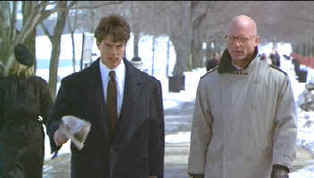

| C,C+Firm,
The/B+,B+ |
| Paramount/1993/154/ANA
1.85 |
There
are so many terrific actors working the celluloid in supporting
roles in this first adaptation of a John Grisham legal novel,
they almost overpower the stars. Tom Cruise supplies the glamour
in The Firm as innocent lawyer Mitch McDeere sucked into a
web of legal vipers on his graduation from Harvard Law School.
When Mitch gets the overly-generous offer from Bendini, Lambert,
& Locke, he practically jumps into a Risky Business dance
rendition. This number five in his graduating class is so bowled
over by the Memphis bucks and perks thrown his way, he's ready
to take up residence in a city decidedly short of his most
grounded desires.
 |
|
McDeere
gets the prod from Agent Tarrance. ©Paramount |
There are gaps in the solid plotting,
mostly personal relationships, that take a back door to the
legal mystery unfolding with rapid fire documentation. Before
you know it, government agents have approached McDeere, a couple
of lawyers are blown away in the Caymans, and mentor Avery Tolar
practically has his tongue hanging out for Mitch's attractive
young wife Abby. If Tolar was the devil in this one he could be
making serious whoopee with Abby, but he's just a plain old
charming advocate leading the high life of frustrated dissipated
genius.
Tom Cruise is fresh-faced, hungry and
energetic as Mitch McDeere. You can really believe Cruise is
this role. He's up to the all the physical stuff and he's quick
as a legal lizard in laying on the dialogue. Oddly enough, the
romantic chemistry between Cruise and Jeanne Tripplehorn who
plays Abby doesn't have the spark to ignite a pile of movie
twigs. But that's happily not the most important aspect of The
Firm. And you have to just relish Gene Hackman. Every
time he;s on the screen the camera revs up. Hackman is merely miraculous in
the role of Avery Tolar, the slick but engaging lawyer assigned
as Mitch's firm mentor. Hackman is so engaging he almost
overpowers Cruise's bright and shiny new star luster.
Citing the supporting actors is a movie
lovers pleasure. In a tiny role, Gary Busey broadens the screen
with grand gestures as private investigator . David Strathairn
as Ray McDeere, provides enigmatic perfection as Mitch's older
brother and Ed Harris, the frustrated federal agent breathing
down Mitch's britches is arrogant and pleasingly impatient. Hal
Holbrook gives Bendini, Lambert and Locke a measure of
importance with his graceful delivery and flowing white locks
while Wilfred Brimley is surprisingly sinister as Bendini's
security chief.
This is probably the best of the
Grisham novels to make it to the screen. The plot complexities
that hang on the legal system work well, and director Sydney
Pollack is masterful in pacing the action with veteran timing.
Pristine elements make it much easier
to produce glossy and snappy DVDs like The Firm. Some
scenes appear very slightly edge enhanced, but it is barely
noticeable. Overall, the DVD delivers consistently sharp
images with discernable background detail. The colors are alive
and skin tones are comfortably varied. The steel gloss of the
city and the party lights of the Caymans are produced with equal
luster. Dave Grushin's excellent score sounds terrific on this
Dolby Digital 5:1 mix. Dialogue is delivered with clarity and
ambient surrounding are convincing.
|
|

 Why
do Al Pacino, Gene Hackman, Pat O'Brien and Goldie
Hawn fall into a select group of actors? Find out
more by clicking the Hollywood
on the Sidelines symbol. Why
do Al Pacino, Gene Hackman, Pat O'Brien and Goldie
Hawn fall into a select group of actors? Find out
more by clicking the Hollywood
on the Sidelines symbol.

The
Movie Poster Archive include extensive poster images from the
films of stars like Susan Hayward, Kirk Douglas, Katharine
Hepburn and many more. This month's featured star is
Susan Hayward

 Gary
Morris's insightful publication Bright Lights Film Journal
turns the celluloid in films from a unique perspective. Click on the image above for more pure movie views. Gary
Morris's insightful publication Bright Lights Film Journal
turns the celluloid in films from a unique perspective. Click on the image above for more pure movie views.
Bruce
Hershenson Move Posters

Bruce Hershenson has been running successful
movie poster auctions for a number of years, most notably for Christies. His site
includes many images and a huge variety of posters for sales
from his periodic catalogs.

The Cinema Laser
A home grown magazine for laserphiles that has been publishing for a
number of years and has embraced DVD in a big way. Lots of helpful
information.

April
19, 2000
Click on
the DVD MIA symbol for profiles of DVDs missing in action.
Add films to the DVD
MIA Master List by
filling out a simple form. Click
Here
|